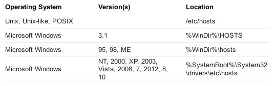
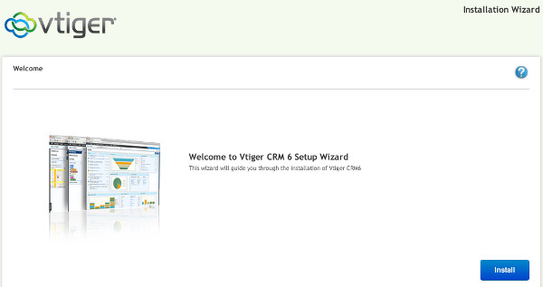
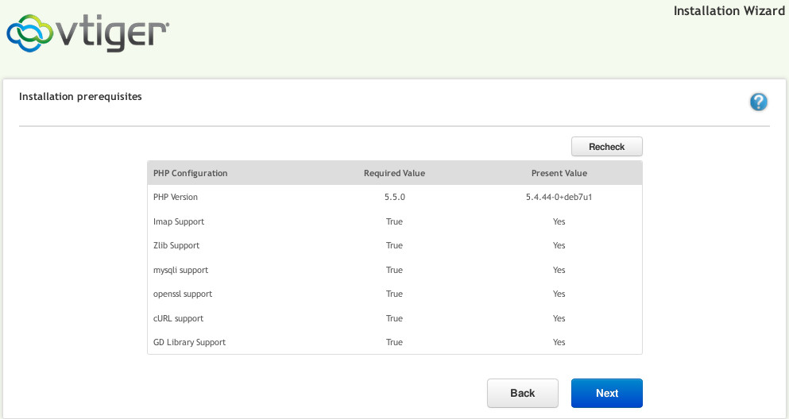
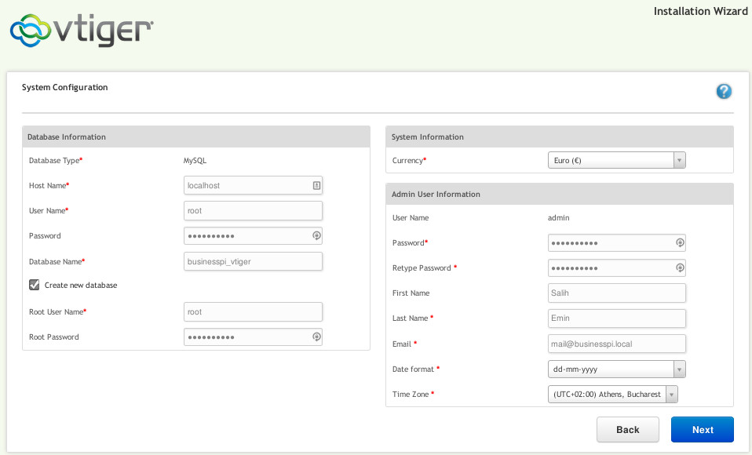
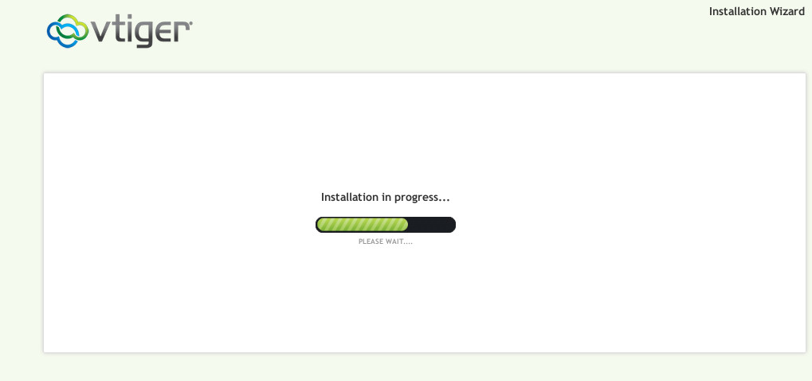
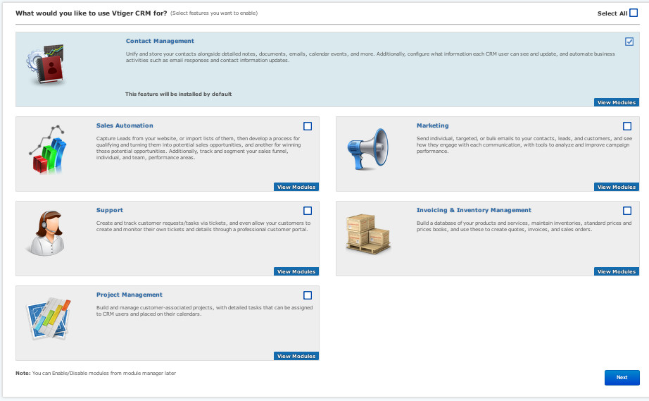
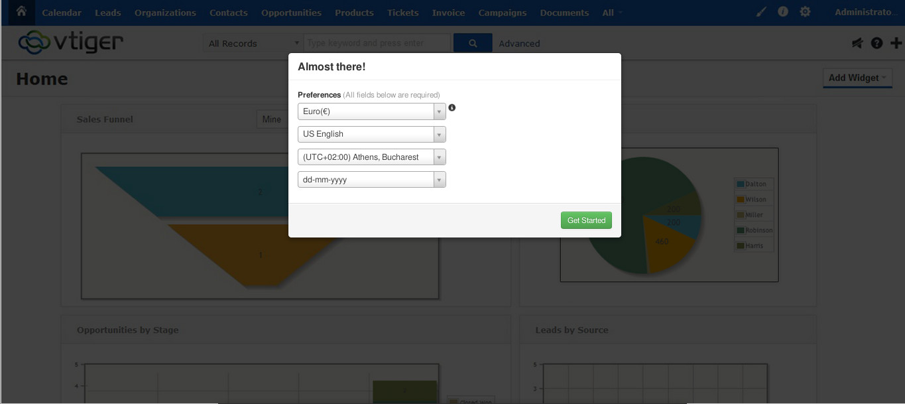
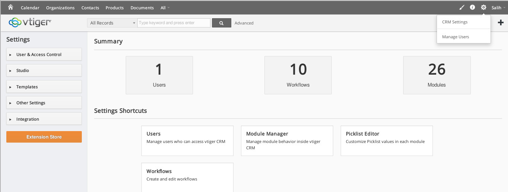

HUMANWINE [Public domain] via Wikimedia Commons
{kind=link}
Στο προηγούμενο άρθρο κάναμε μια εισαγωγή στο τι είναι το BusinessPi και είδαμε τεχνικές λεπτομέρειες σχετικά με το Hardware του. Μπορείτε να τα διαβάσετε στις παρακάτω αναρτήσεις:
- Τι είναι το BusinessPi
- Hardware δοκιμών
- Λειτουργικό Σύστημα, Υπηρεσίες παρασκηνίου και Λογισμικό
- Διαθέσιμη η έκδοση 15.04-1 του BussinessPi για λήψη
Εγκατάσταση Λειτουργικού
Για να κάνετε εγκατάσταση του λειτουργικού συστήματος θα χρειαστείτε : Λήψη Λειτουργικού συστήματος (Βλέπε Downloads) SD Card class 10 (ελάχιστος απαιτούμενος χώρος 2GB) * SD Card Reader στον υπολογιστή σας
Αφού κάνετε λήψη του λειτουργικού συστήματος, κάντε εξαγωγή το αρχείο και επιβεβαιώστε την ακεραιότητα του (βλέπε Οδηγίες λήψης). Έπειτα συνδέστε την SD κάρτα στον υπολογιστή σας και ανάλογα με το λειτουργικό σύστημα του υπολογιστή σας εκτελέστε μια από τις παρακάτω διαδικασίες:
Linux
- Εντοπίστε το όνομα της SD κάρτας στον υπολογιστή σας με την εντολή lsblk ή την dmesg (π.χ. μπορεί να το δείτε προσαρτημένο με το όνομα /dev/mmcblk0 ) και κάντε αποπροσάρτηση με την εντολή umount π.χ.
sudo umount /dev/<όμομα συσκευής>
- Κάντε εγγραφή του image του λειτουργικού στην SD κάρτα με το λογισμικό dd :
sudo dd if=bananian-1504.img of=/dev/<όνομα συσκευής> bs=1M && sync
Windows
Οι χρήστες Windows μπορούν να χρησιμοποιήσουν το Win32 Disk Imager. Για λήψη του λογισμικού επισκεφθείτε την ιστοσελίδα : http://sourceforge.net/projects/win32diskimager/
MacOS X
- Εντοπίστε το όνομα της SD κάρτας στον υπολογιστή σας με την εντολή 'diskutil list' και κάντε αποπροσάρτηση με την εντολή 'diskutil unmountDisk' όλη την συσκευή π.χ (έστω η συσκευή είναι disk9).
diskutil unmountDisk disk9
- Κάντε εγγραφή του image του λειτουργικού στην SD κάρτα με το λογισμικό dd :
sudo dd if=bananian-1504.img of=/dev/disk9 bs=1M && diskutil eject disk9
Σύνδεση και πρώτη εκκίνηση
Αφού έχετε ολοκληρώσει την εγγραφή του λειτουργικού συστήματος στην SD κάρτα, τώρα:
- Συνδέστε την Κάρτα SD στο Pi board
- Συνδέστε το καλώδιο δικτύου στο Pi board και την άλλη άκρη σε μια θύρα του router σας
- Συνδέστε την παροχή ρεύματος στο Pi Board σας (MicroUSB 28/24 AWG καλώδιο 2Αmp/5V DC)
Το σύστημα θα εκκινήσει άμεσα και θα δείτε τα χαρακτηριστικά led να αναβοσβήνουν.
Εύρεση IP του Pi board
Το Pi Board είναι ρυθμισμένο να λαμβάνει αυτόματα μια IP που θα έχει αναθέσει ο DHCP Server του router σας. Ενδεικτικά για να εντοπίσετε την IP του board σας μπορείτε να συνδεθείτε στο router σας μέσω του browser του υπολογιστή σας (διαβάστε το manual του μοντέλου του router σας) γράφοντας στην διεύθυνση του browser σας την IP του router σας (θα έχει την μορφή 192.168.1.0). Αφού συνδεθείτε, βρείτε την DHCP list που θα περιλαμβάνει όλα τα IP που έχουν ανατεθεί απο το router.
Εναλλακτικά μπορείτε σε περιβάλλον Linux να χρησιμοποιήσετε το λογισμικό Arp-Scan :
sudo arp-scan -l -v
το αποτέλεσμα της εντολής θα επιστρέψει κάτι που μοιάζει με το παρακάτω
Interface: wlan0, datalink type: EN10MB (Ethernet)
Using 10.3.2.0:255.255.255.0 for localnet
Starting arp-scan 1.8.1 with 256 hosts (http://www.nta-monitor.com/tools/arp-scan/)
10.3.2.8 ec:1a:59:87:60:b8 (Unknown)
10.3.2.40 10:60:4b:4e:09:73 (Unknown)
--- Pass 1 complete
10.3.2.88 02:4f:0b:42:97:35 (Unknown)
--- Pass 2 complete
Σύνδεση με SSH στο Pi Board
Για την σύνδεση με το Pi Board θα χρειαστείτε τερματικό περιβάλλον ικανό να εκτελεί SSH συνδέσεις. (Επισκεφθείτε την επίσημη ιστοσελίδα η την κοινότητα που αντιστοιχεί στο λειτουργικό του υπολογιστή σας για περισσότερες πληροφορίες)
Μια από τις IP που αναφέρονται είτε στην λίστα DHCP του router σας είτε στη επιστροφή της εντολής arp-scan είναι του η IP του Pi board σας οπότε μπορείτε να δοκιμάσετε να συνδεθείτε με SSH σε μια απο αυτές.
Το όνομα χρήστη είναι root και το password είναι businesspi (το οποίο θα πρέπει να το αλλάξετε για λόγους ασφαλείας)
Αν απορριφθεί η σύνδεση συνεχίζετε με την επόμενη IP. Παράδειγμα:
salih@debian:~$ ssh root@10.3.2.40
ssh: connect to host 10.3.2.40 port 22: Connection refused
salih@debian:~$ ssh root@10.3.2.88
The authenticity of host '10.3.2.88 (10.3.2.88)' can't be established.
RSA key fingerprint is SHA256:epMOnf1ENl7M6FaSd1Qkvsu9bvx6k2v20mSnYX8E.
Are you sure you want to continue connecting (yes/no)? yes (εδώ πληκτρολογείτε yes και πατάτε enter)
Warning: Permanently added '10.3.2.88' (RSA) to the list of known hosts.
root@10.3.2.88's password:
Linux bananapi 3.4.104-bananian #1 SMP PREEMPT Mon Apr 6 18:25:40 UTC 2015 armv7l
------------------------------------------------------------------------
Welcome to Bananian Linux!
For news and updates check: https://www.bananian.org
Any questions? Read the FAQ first: https://www.bananian.org/faq
Run 'bananian-config' to set up Bananian Linux
Run 'bananian-update' to check for distribution updates
------------------------------------------------------------------------
root@vtiger ~ #
Εφόσον δείτε την επιστροφή root@bananapi ~ # είστε πλέον συνδεδεμένοι στο λειτουργικό σύστημα του Pi board σας, όπου μπορείτε να εκτελείτε όλες τις διαθέσιμες εργασίες που παρέχει ένα Debian GNU/Linux λειτουργικό σύστημα.
Ρυθμίσεις SSH
Eίναι συμαντικό να αλλάξετε το port στο οποίο συνδέεστε μέσω ssh, να δημιουργήσετε εκ νέου κλειδιά κρυπτογραφημένης σύνδεσης και να εγκαταστίσετε κάποιον διαχειριστή firewall:
Για την ρύθμιση του SSH port:
root@vtiger ~ # nano /etc/ssh/sshd_config
και αλάξτε στην γραμμή Port 22 την 22 σε διαφορετική. Έπειτα κάντε επανεκκίνηση την υπηρεσία SSH:
root@vtiger ~ # invoke-rc.d ssh restart
Έτσι την επόμενη φορά που θα συνδεθείτε χρησιμοποιήστε το νέο port με την παράμετρο -p <νέα τιμή>
Για την δημιουργία κλειδιών επαναρυθμίστε:
root@vtiger ~ # rm -v /etc/ssh/ssh_host_*
root@vtiger ~ # dpkg-reconfigure openssh-server
Creating SSH2 RSA key; this may take some time ...
[ ok ] Restarting OpenBSD Secure Shell server: sshd.
Αφού δημιουργηθούν νέα κλειδιά, αποσυσνδεθείτε απο το board και αφαιρέστε απο τον υπολογιστή σας τα παλιά κλειδιά διότι σε διαφορετική περίπτωση όταν θα προσπαθήσετε να συνδεθείτε θα δείτε το παρακάτω μήνυμα με το οποίο αποτυγχάνεται η πιστοποίηση κλειδιών κρυπτογράφησης.:
@@@@@@@@@@@@@@@@@@@@@@@@@@@@@@@@@@@@@@@@@@@@@@@@@@@@@@@@@@@
@ WARNING: REMOTE HOST IDENTIFICATION HAS CHANGED! @
@@@@@@@@@@@@@@@@@@@@@@@@@@@@@@@@@@@@@@@@@@@@@@@@@@@@@@@@@@@
IT IS POSSIBLE THAT SOMEONE IS DOING SOMETHING NASTY!
Someone could be eavesdropping on you right now (man-in-the-middle attack)!
It is also possible that a host key has just been changed.
The fingerprint for the RSA key sent by the remote host is
SHA256:jhagsdsjdasd47163817897098029ysdsd/g.
Please contact your system administrator.
Add correct host key in /home/salih/.ssh/known_hosts to get rid of this message.
Offending RSA key in /home/salih/.ssh/known_hosts:9
remove with: ssh-keygen -f "/home/salih/.ssh/known_hosts" -R [10.3.2.88]
RSA host key for [10.3.2.88] has changed and you have requested strict checking.
Host key verification failed.
Η αφαίρεση μπορεί να γίνει με δυο τρόπους:
ssh-keygen -R <ip-to-board>
ή εναλλακτικά δείτε στο μήνυμα την γραμμή Οffending RSA key in /home/salih/.ssh/known_hosts:9 ανοίξτε το αρχείο known_hosts και αφαιρέστε την αντίστοιχη εγγραφή με τον παρακάτω τρόπο:
vi +9 .ssh/known_hosts
Πατήστε dd για να διαγράψετε την γραμμή. Αποθηκεύστε και κλείστε με :wq
Τέλος σας συνιστούμε να εγκαταστισετε και να ρυθμίστε κάποιον διαχειριστή των iptables (π.χ. shorewall, ufw κλπ) που σας βολεύει και να το ρυθμίσετε να δέχετε την νέα τιμή του Port για SSH που βάλατε παραπάνω.
Περισσότερα για σχετικά με τις ρυθμίσεις SSH και Firewall/iptables δείτε στους επίσημους οδηγούς του Debian:
- https://wiki.debian.org/SSH#Securing
- https://wiki.debian.org/DebianFirewall
- https://wiki.debian.org/iptables
Πρώτη ρύθμιση
Για την χρήση του λογισμικού Vtiger που έρχεται προεγκατεστιμένο στο BusinessPi θα πρέπει να ρυθμίσετε τον υπολογιστή σας να αναγνωρίζει το domain του BusinessPi αλλά και να θέσετε μια στατική IP στο BusinessPi
Ρύθμιση του BusinessPi
Οι ρυθμίσεις που θα πρέπει να κάνετε είναι οι εξής:
Ρυθμίσεις λειτουργικού συστήματος
Συνδεθείτε στο BusinessPi χρησιμοποιώντας την IP του BusinessPi.
ssh root@<IP-Τοu-BusinessPi>
Ο κωδικός του root είναι : businesspi (τον οποίο τον αλλάζετε αμέσως μετά). Έπειτα εκτελέστε της εντολή
bananian-config
και απαντήστε στις ερωτήσεις όπως παρακάτω:
- Αλλαγή root password : Υ (αλλάξτε τον κωδικό)
- Τime zone : Ν
- Character set : N
- Hostname : N
- Video acceleration : N (Απαντήστε θετικά ΜΟΝΟ αν σκοπεύετε να συνδέσετε οθόνη στο BananaPi σας )
- USB OTG status : N
- Size of the root file system : Y - (Για να επεκταθεί το σύστημα αρχείων στο μέγεθος της κάρτας SD)
Η ρύθμιση έχει ολοκληρωθεί.
Ρύθμιση βάσης δεδομένων
Για την πρώτη ρύθμιση της βάσης δεδομένων MySQL μπορείτε να εκτελέσετε τον οδηγό:
mysql_secure_installation
o κωδικός σύνδεσης για τον root της βάσης δεδομένων είναι businesspi. Απαντήστε με Υ σε όλες τις ερωτήσεις.
Μια καλή πρακτική είναι να δημιουργίσετε εναν νέο χρήστη της MySQL με σκοπό να τον χρησιμοποιείσετε ως χρήστη της βάσης δεδομένων για τις ρυθμίσεις του Vtiger που θα δούμε παρακάτω. Σε περίπτωση που θέλετε να δημιουργήστε χρήστη/βάση απο πριν μπορείτε να χρησιμοποιείσετε έναν εύχρηστο διαχείριση της MySQL (π.χ. μπορείτε να εγκαταστίστε phpMyAdmin ή mysql-workbench). Σχετικά με αυτά μπορείτε να διαβάσετε στους επίσημους οδηγούς τους:
Ρύθμιση Στατικής IP για το BusinessPi
Πριν όμως κάνουμε επανεκκίνηση το σύστημα θα πρέπει να ρυθμίσουμε μια στατική IP ώστε να μην χρειάζεται κάθε φορά να ψάχνουμε την IP του board μας επειδή ο DHCP λαμβάνει αυτόματα την IP απο το rooter μας.
Θα χρειαστεί να επεξεργαστούμε το αρχείο /etc/network/interfaces
root@vtiger ~ # nano /etc/network/interfaces
# interfaces(5) file used by ifup(8) and ifdown(8)
auto lo
iface lo inet loopback
auto eth0
# dhcp configuration
# iface eth0 inet dhcp (<--- ΕΔΩ βάζουμε # στην αρχή)
# static ip configuration ( Συμπληρώνουμε όπως παρακάτω)
iface eth0 inet static
address 192.168.10.200
netmask 255.255.255.0
network 192.168.10.0
broadcast 192.168.10.255
gateway 192.168.10.1
#οι dns-* επιλογές ρυθμίζονται απο το πακέτο resolvconf, εφόσον είναι εκγατεστημένα
dns-nameservers 192.168.10.1
dns-search vtiger.businesspi.local
Για τις τιμές που θα βάλετε στα αντίστοιχα πεδία θα πρέπει να δείτε ποιες είναι οι σωστές από τις ρυθμίσεις του router σας ή απο τον υπολογιστή σας (πληροφορίες δικτύου). Θα πρέπει να προσέξετε να μην βάλετε κάποια IP στην τιμή address που ήδη έχει ανατεθεί σε άλλη συσκευή στο δίκτυό σας για να μην προκληθεί διένεξη των διευθύνσεων.
Αποθηκεύστε το αρχείο και κλείστε το. Μια τελευταία ρύθμιση είναι να προσθέσετε την στατική IP και στο /etc/hosts αρχείο.
root@vtiger ~ # nano /etc/hosts
127.0.0.1 localhost
127.0.1.1 vtiger.businesspi.local vtiger
192.168.10.200 vtiger.businesspi.local vtiger
# The following lines are desirable for IPv6 capable hosts
::1 localhost ip6-localhost ip6-loopback
ff02::1 ip6-allnodes
ff02::2 ip6-allrouters
Αποθηκεύστε το αρχείο και κλείστε το. Έπειτα κάντε επανεκκίνηση του συστήματος :
shutdown -r now
Ρύθμιση αναγνώρισης του Domain του BusinessPi
Ο υπολογιστής απο τον οποίο συνδέεστε στον BusinessPi σας θα πρέπει να ρυθμιστεί ώστε να αναγνωρίζει το domain του BusinessPi.
Ανάλογα με το λειτουργικό σας σύστημα θα χρειαστεί να βρείτε και να ανοίξετε το αρχείο hosts και να βάλετε την IP που θέσατε για το Board σας και να γράψετε δίπλα το Domain vtiger.businesspi.local όπως κάνατε παραπάνω στο αρχείο /etc/hosts του board σας.

Επαναλάβετε την ίδια διαδικασία σε όσους υπολογιστές στο εταιρικό σας δίκτυο διαθέτετε και επιθυμείτε να χρησιμοποιούν το Vtiger του BusinessPi.
Πλέον μπορείτε να συνδέεστε και όπως παρακάτω (χωρίς χρήση IP):
ssh root@vtiger.businesspi.local
Ρύθμιση του Vtiger
Σχετικά με το τι είναι το Vtiger, μιλήσαμε στο προηγούμενο άρθρο "Λειτουργικό Σύστημα, Υπηρεσίες παρασκηνίου και Λογισμικό".
Η πρώτη ρύθμιση του Vtiger ξεκινάει με την πρώτη επίσκεψη στο domain http://vtiger.businesspi.local

Αφού πατήσετε Install το Vtiger θα ελέγξει αν όλες οι προαπαιτούμενες ρυθμίσεις του συστήματος είναι έγκυρες.

Εφόσον όλα είναι εντάξει πατήστε Next για να συμπληρώσετε τα στοιχεία του διαχειριστή Vtiger, τα στοιχεία εισόδου στην βάση δεδομένων MySQL και το νόμισμα. Εάν δεν έχετε δημιουργήσει βάση δεδομένων από πριν, τότε κάντε κλικ στο κουτάκι "Create New Database" και εισάγετε τα στοιχεία εισόδου διαχειριστή της βάσης (root).

Εφόσον όλα τα στοιχεία που δώσατε είναι ορθά, η εγκατάσταση θα ξεκινήσει μόλις πατήσετε Next. Η εγκατάσταση και ρύθμιση της βάσης μπορεί να πάρει αρκετά λεπτά.

Μόλις ολοκληρωθεί η παραπάνω διαδικασία, θα ερωτηθείτε ποιες δυνατότητες του Vtiger θέλετε να είναι εξαρχής ενεργοποιημένες. Επιλέξτε αυτά που σας ενδιαφέρουν ή αρμόζουν στην ιδιότητα της επιχείρησης σας και πατήστε Next. Η ρύθμιση των επιπλέον διαθέσιμων δυνατοτήτων μπορεί να γίνει και μετά την εγκατάσταση, στις ρυθμίσεις του CRM.

Μόλις ολοκληρωθεί η ενεργοποίηση των δυνατοτήτων, το Vtiger θα σας συνδέσει αυτόματα ως διαχειριστή όπου θα κάνετε την πρώτη ρύθμιση του λογαριασμού του διαχειριστή.

Είστε έτοιμοι ! Τώρα μπορείτε κάνοντας κλικ στο "Γρανάζι" δεξιά επάνω, να επιλέξετε "CRM Settings" για να προσθέσετε νέες δυνατότητες, νέους χρήστες, ομάδες, ρυθμίσεις αναφορών κ.α.

Τέλος να αναφέρουμε ότι έχουμε εξελληνισμένο το Vtiger 6 και μπορείτε να προσθέσετε το πακέτο ελληνικής γλώσσας μέσα απο το CRM σας . Επισκεφθείτε το επίσημο Vtiger Marketpalce για να δείτε λεπτομέρειες.
Σας συστήνουμε ανεπιφύλακτα να μελετήσετε τον επίσημο οδηγό χρήσης του Vtiger https://wiki.vtiger.com/vtiger6/index.php/Main_Page . Να σημειώσουμε ότι στον οδηγό πολλές φορές μπορεί να αναφέρονται για το Online Vtiger ή ως On-demand Vtiger, το οποίο είναι η online έκδοση που προσφέρεται ως ενοικιαζόμενοι υπηρεσία από την εταιρία Vtiger.